Part 0: Camera Calibration and 3D Scanning
Two screenshots of the camera frustums visualization in Viser:
Frustum Screenshot 1
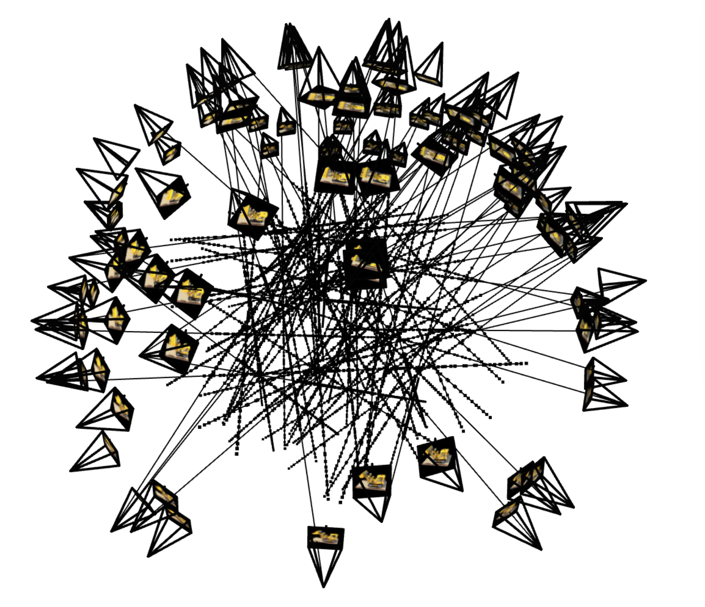
Frustum Screenshot 2

Two screenshots of the camera frustums visualization in Viser:

I used 4 fully connected layers interlaced with ReLU activation functions. I ended things with a
sigmoid layer to constrain the output to values in the range (0, 1). Each layer was 256 neurons wide
and I used a learning rate of 1e-2. I used MSE loss and ran 14 epochs of batch sizes of 10,000,
which came out to slightly over 1,000 iterations.
I tested on sizes width sizes 256 and 32 and positional encoding sizes of 2 and 10.
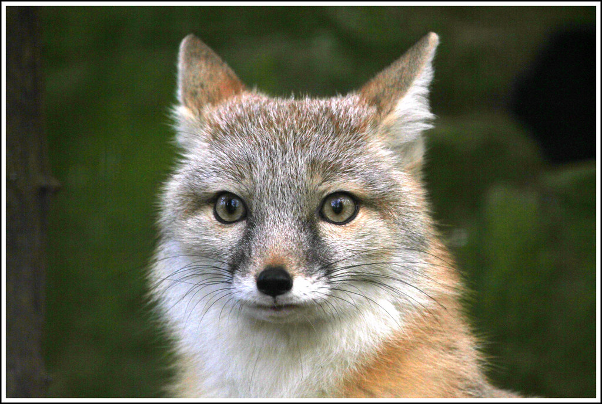
Graphs tracking the training performance of the photos:
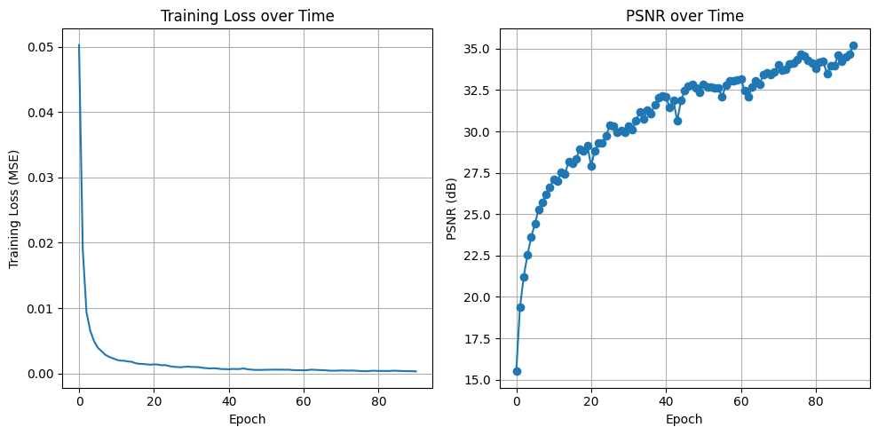
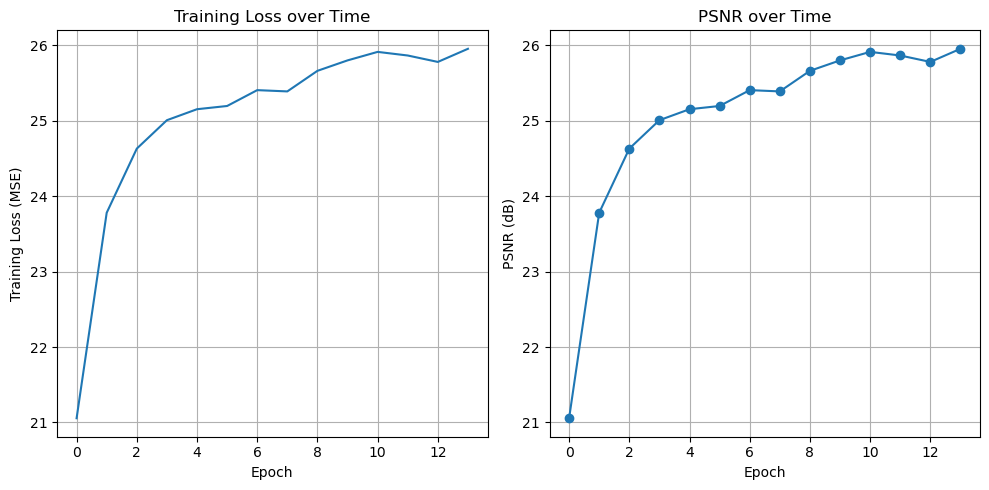
Detailed view of results for each configuration (Input, GT, Prediction, Difference, Feature Map):
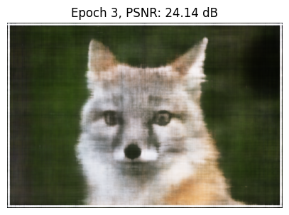
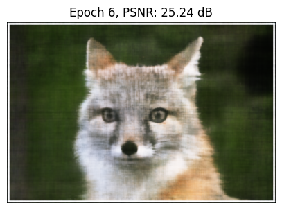
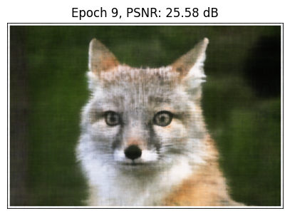
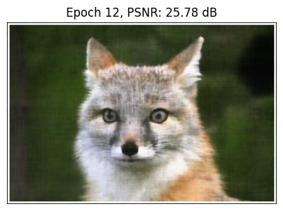
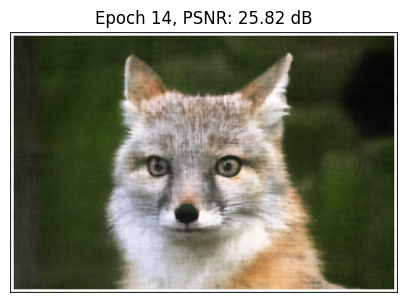
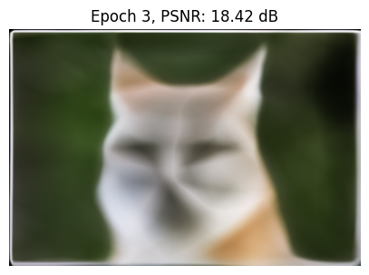
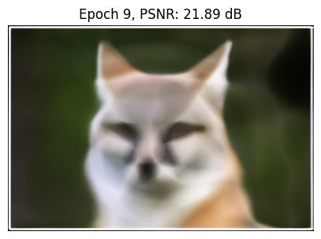
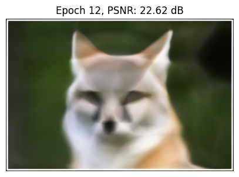
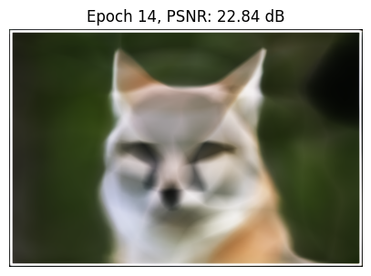
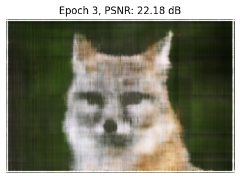
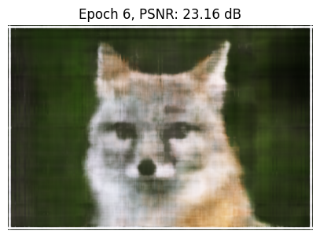
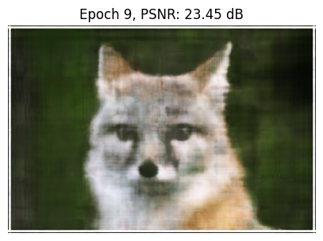
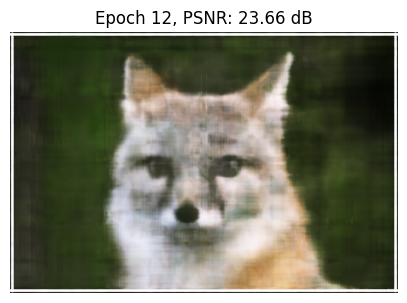
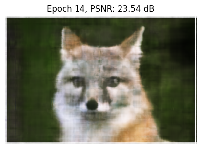
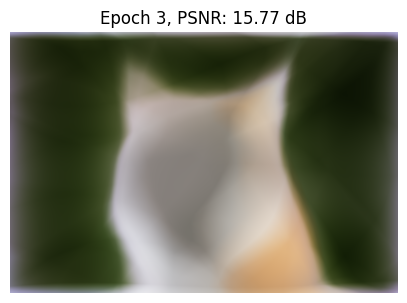
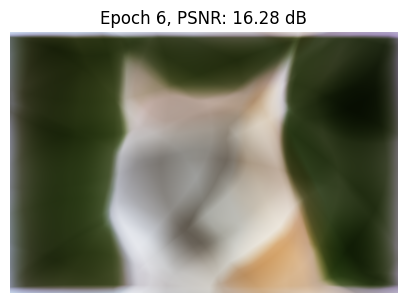
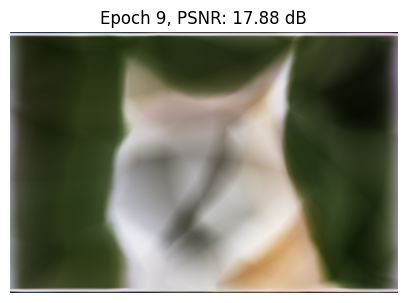
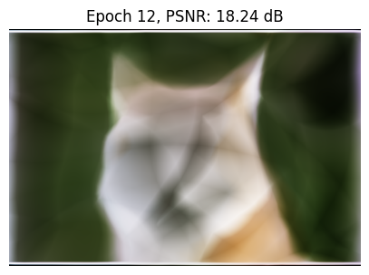
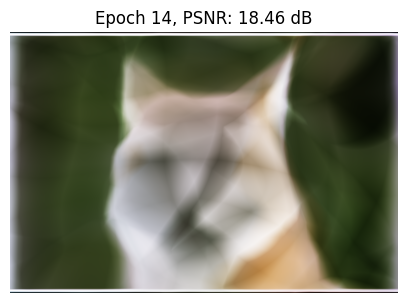
Comparison of the final prediction for each configuration ($L$, $W$) on one image of your choice:
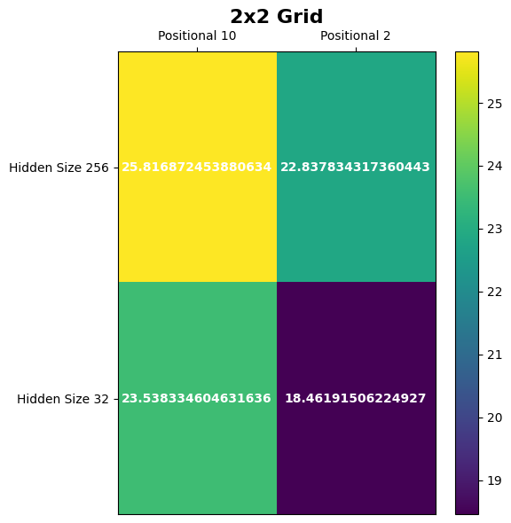
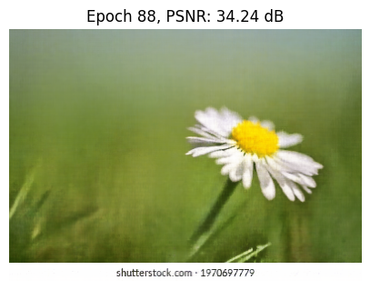
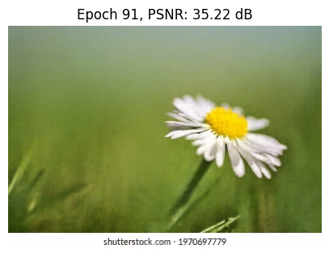
**Ray Generation:** Function implemented using C2W matrix and intrinsics.
**Sampling:** Hierarchical Volume Sampling used ($N_c$ coarse samples, $N_f$ fine samples).
**Volume Rendering:** Implemented the full rendering equation: $C(r) = \sum T_i \cdot (1 - \exp(-\sigma_i \cdot \delta_i)) \cdot c_i$.
Visualization of up to 100 rays and their sampled points with the camera poses:


Predicted images across 5 key iterations showing the NeRF learning the scene geometry and texture:


PSNR curve tracking the performance on the held-out validation images:

A GIF showing a full 360-degree render of the Lego object using test camera poses: